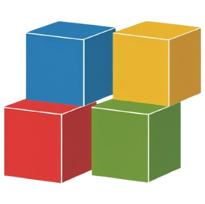

Mixed Reality Block Detection Test
d
Test Demo:
This lightweight demo showcases a vision detection algorithm for Pearl Lab’s mixed reality game, Bootle Blast. Combining object detection with fast-paced gameplay, it tracks key objects in real time using YOLOV8.
Due to licensing, full game code isn’t shared, but this demo proves the concept and highlights a core detection pipeline for future projects.